20周年回饋社會系列活動
2014年11–12月，時值摩根士丹利中國成立20周年，摩根士丹利北京和上海的員工開展了“回饋社會”的系列活動以慶祝公司進入中國20周年。摩根士丹利中國一直保持著“回饋社會”的公司傳統，持續支持中國的慈善項目，定期組織員工志願活動，鼓勵員工積極投入到公司組織的慈善活動中，貢獻自己的一份力量。
春苗小花聖誕音樂會（Chunmiao Little Flower）
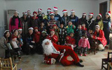2014年12月9日，摩根士丹利北京的部分員工來到位於北京市順義區的春苗小花學習中心，給這裡的小朋友們帶來了一場溫馨的聖誕音樂會。4位來自中央音樂學院的樂手們以嫻熟的演奏技巧為小朋友們演奏了《藍色多瑙河》、《歡樂頌》等精彩的弦樂四重奏曲目，並與摩根士丹利員工一起合作了表演了聖誕歌曲。“聖誕老人”將摩根士丹利北京員工精心准備的新年禮物派發給小朋友們，與他們提前度過了一個愉快的聖誕節。
愛心盒捐贈（Box of Love）
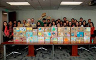摩根士丹利上海的員工歷時半個月，為公益組織“米飯媽媽”的愛心盒項目籌得40個愛心盒所需要的善款，並同時自發地動手裝滿43個愛心盒，為中國貧困地區的殘障孤兒提供玩具、文具、糖果等生活學習用品，送上來自摩根士丹利的愛心。
2014年全球志願者月
截止2014年7月，在2014年的“摩根士丹利全球志願者月”中，百名中國大陸員工在摩根士丹利的號召下，參加慈善活動的時間總計達1838小時，。這項“摩根士丹利全球志願者月”活動是摩根士丹利在全球范圍內的活動，旨在加強員工參與、履行公司對員工志願活動的承諾，員工積極投入到公司組織的慈善活動中，貢獻自己的一份力量。在2014年度的“摩根士丹利全球志願者月”中，中國大陸員工們開展了與春苗小花關愛系列活動、北京兒童醫院慰問活動、心連心禮包捐贈活動以及金羽翼殘兒藝術展等。
春苗小花關愛系列活動（Chunmiao Little Flower）
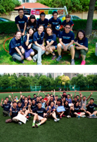2014年6-7月，摩根士丹利大陸員工開展了豐富多彩的活動為春苗小花關愛項目盡自己的一份力量。6月至7月間，摩根士丹利上海和北京的員工舉辦為春苗小花的籌款活動，總共籌得善款80,000元。其中摩根士丹利上海的300名志願者加入到籌款的活動中，他們不僅組織和參與了包括足球、籃球和田徑等多項競賽，還作為捐款人獻出自己的愛心。6月14日，20名來自摩根士丹利北京的員工參加了春苗小花的運動會，在運動會上，志願者們或擔任裁判或與孩子們一起比賽，享受運動帶來的樂趣。兩地為春苗小花關愛項目籌款活動是今年“摩根士丹利全球志願者月”最為重要的活動，也是小花關愛項目的系列活動的高潮。
北京兒童醫院慰問活動
 2014年6月23日，帶著對孩子們的關愛，摩根士丹利20名員工來到了北京兒醫院。員工為孩子們帶去了書和玩具，並且與孩子們一起做游戲、讀書、唱歌。這是摩根士丹利連續第六年探望兒童醫院的孩子們。同時在23至27日期間，摩根士丹利的志願者們在兒童醫院的門診樓的咨詢處幫助護士向前來咨詢的病人和家長進行導醫。
2014年6月23日，帶著對孩子們的關愛，摩根士丹利20名員工來到了北京兒醫院。員工為孩子們帶去了書和玩具，並且與孩子們一起做游戲、讀書、唱歌。這是摩根士丹利連續第六年探望兒童醫院的孩子們。同時在23至27日期間，摩根士丹利的志願者們在兒童醫院的門診樓的咨詢處幫助護士向前來咨詢的病人和家長進行導醫。
心連心禮包捐贈
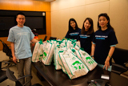今年六一兒童節前夕，河南省上蔡縣艾滋病村的180多個孩子們陸續收到摩根士丹利北京和上海員工們的禮物，這些禮物由志願者們先進行分類、整理，最后分裝在各個禮包內通過郵局寄給孩子們。
Eyes on Shanghai
 今年7月,30名摩根士丹利上海的員工帶著20多名久牽學校的同學們來到中華藝術宮參觀游覽。在游覽中，同學們不僅感受到展品的精美絕倫，還學會用相機拍攝出他們眼中的中華藝術宮，發現上海的美。同學們的攝影作品被影印裝裱出來，展示在摩根士丹利上海辦公室和久牽學校中。
今年7月,30名摩根士丹利上海的員工帶著20多名久牽學校的同學們來到中華藝術宮參觀游覽。在游覽中，同學們不僅感受到展品的精美絕倫，還學會用相機拍攝出他們眼中的中華藝術宮，發現上海的美。同學們的攝影作品被影印裝裱出來，展示在摩根士丹利上海辦公室和久牽學校中。
金羽翼殘兒藝術展
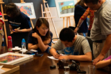6月12日，摩根士丹利北京辦公室迎來了金羽翼的五位自閉症兒童，這裡正在舉辦金羽翼自閉症兒童藝術展。孩子們的才藝和畫作贏得了志願者們的贊賞。 摩根士丹利的志願者們希望能夠長期幫助自閉症兒童進行康復性訓練。

2013年全球志願者月
截止2013年7月，在2013年的“摩根士丹利全球志願者月”中，百名中國大陸員工在摩根士丹利的號召下，積極參與志願者活動、貢獻自己力量。這項“摩根士丹利全球志願者月”活動是摩根士丹利在全球范圍內的活動，旨在加強員工參與、履行公司對員工志願活動的承諾。在2013年度的“摩根士丹利全球志願者月”中，中國大陸員工們開展了微笑活動、北京兒童醫院慰問活動、River of Hearts Sorting Party、“微笑活動”慈善拍賣會、關愛農民工子女等活動。
微笑行動（Operation Smile）
 2013年6月，摩根士丹利大陸員工以不同形式為中國農村家庭唇裂和語言障礙兒童籌集手術基金。其中，摩根士丹利北京50名員工以步行5公裡馬拉鬆的形式參與此公益活動﹔摩根士丹利上海員工則在公司舉行了慈善拍賣活動，全體員工都積極參與並紛紛獻出愛心，義賣的物品均來自員工個人，義賣所得的全部善款都將作為支持“微笑行動”的專用款項。同時公司還捐贈了與員工籌款額相當的金額，總共籌集善款1,8000美金作為手術基金捐獻給Operation Smile機構。
2013年6月，摩根士丹利大陸員工以不同形式為中國農村家庭唇裂和語言障礙兒童籌集手術基金。其中，摩根士丹利北京50名員工以步行5公裡馬拉鬆的形式參與此公益活動﹔摩根士丹利上海員工則在公司舉行了慈善拍賣活動，全體員工都積極參與並紛紛獻出愛心，義賣的物品均來自員工個人，義賣所得的全部善款都將作為支持“微笑行動”的專用款項。同時公司還捐贈了與員工籌款額相當的金額，總共籌集善款1,8000美金作為手術基金捐獻給Operation Smile機構。
北京兒童醫院慰問活動
2013年6月18日，帶著對孩子們的關愛，摩根士丹利15名員工來到了北京兒童醫院。員工為孩子們帶去了書和玩具，並且與孩子們一起做游戲、讀書、唱歌。這是摩根士丹利連續第五年探望兒童醫院的孩子們。
River of Hearts Sorting Party
 今年6月摩根士丹利10名上海員工參與了River of Hearts Sorting Party組織的為捐贈物資分類打包活動。摩根士丹利員工和其他志願者同心協力把收到的捐贈物資包括衣物、玩具等進行篩選、整理、分類、裝箱、貼標簽、打包，並且還參與了清運剩余物資的工作。經過長達6小時的工作，數箱物資被整理完畢，裝箱物資將由工作人員分配寄送到全國貧困地區。
今年6月摩根士丹利10名上海員工參與了River of Hearts Sorting Party組織的為捐贈物資分類打包活動。摩根士丹利員工和其他志願者同心協力把收到的捐贈物資包括衣物、玩具等進行篩選、整理、分類、裝箱、貼標簽、打包，並且還參與了清運剩余物資的工作。經過長達6小時的工作，數箱物資被整理完畢，裝箱物資將由工作人員分配寄送到全國貧困地區。
關愛農民工子女
今年7月，15名摩根士丹利上海員工帶領久牽學校的同學們到上海野生動物園參觀。同學們在活動中不僅觀賞了野生動物，還在員工的耐心教學下學會了使用相機，並拍出了許多富有創意的照片。上海全部員工對這些照片進行投票並選出前十名，並聯合久牽學校對獲獎同學進行了榮譽表彰。
2012年全球志願者月
截止到2012年7月，在2012年的“摩根士丹利全球志願者月”中，百名中國大陸員工在摩根士丹利的號召下，積極參與志願者活動、貢獻自己力量，該區域員工志願者團體參加慈善活動的時間總計達176,000小時，為公司創造了新的記錄。這項“摩根士丹利全球志願者月”活動是摩根士丹利在全球范圍內的活動，旨在加強員工參與、履行公司對員工志願活動的承諾。在2012年度的“摩根士丹利全球志願者月”中，中國大陸員工們開展了北京兒童醫院慰問演出、為盲人講電影、中國慈善運動會、北京兒童醫院眼科中心志願者服務等活動。
北京兒童醫院慰問演出
 摩根士丹利40名員工，先后於2012年5月30日、2012年6月15日來到了北京兒童醫院探訪住院的孩子們，並組織了一場快樂的聯歡活動。員工志願者們為孩子們帶來了書和玩具，和孩子們做互動游戲，還特意為孩子們組織樂隊為其表演。孩子們在活動中十分開心，臉上所洋溢出的幸福笑容，讓所有的志願者們倍感欣慰與感動。
摩根士丹利40名員工，先后於2012年5月30日、2012年6月15日來到了北京兒童醫院探訪住院的孩子們，並組織了一場快樂的聯歡活動。員工志願者們為孩子們帶來了書和玩具，和孩子們做互動游戲，還特意為孩子們組織樂隊為其表演。孩子們在活動中十分開心，臉上所洋溢出的幸福笑容，讓所有的志願者們倍感欣慰與感動。
為盲人講電影
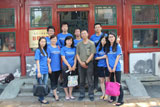2012年6月30日，10名摩根士丹利員工志願者前往北京市西城區參加盲人講電影志願者活動，在活動中志願者為盲人朋友們簡讀本周熱點新聞、通過志願者的自我介紹，志願者與盲人朋友們建立起了良好的溝通，增進了感情、隨后志願者為盲人朋友們進行了長達近2小時的電影講解，現場氣氛十分溫馨。
慈善運動會
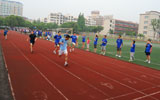2012年6–7月，近百名來自北京和上海的摩根士丹利員工志願者參加了公司舉辦的慈善運動會，共籌集善款8萬元人民幣，為上海外來務工人員子弟學校捐款建設小型圖書館。本屆運動會包含多種比賽，包括團體跳繩比賽、個人跳繩比賽、跳遠比賽、投籃比賽、團體接力賽、運球跑比賽、拔河比賽、卡拉OK比賽、團體保齡球比賽等。此次活動既讓員工們展現了自己的才能，同時又提供了全新的平台讓員工有機會參與到慈善中來，為需要幫助的人獻出自己的一份力量，得到了參與者們一致的好評。
北京兒童醫院眼科中心志願者服務
2012年7月21-22日，數名摩根士丹利員工志願者參加了北京兒童醫院眼科中心志願者服務活動，活動主要的內容為摩根士丹利員工志願者引導患兒進入分診室就醫、診療處為患兒驗光測視力、在配鏡服務中心協助患兒選擇眼鏡等。服務過程無不體現志願者對患兒的關懷和愛護。
2011年全球志願者月
截止2011年6月，摩根士丹利在亞太地區共舉辦了136項志願服務活動。2011年的“摩根士丹利全球志願者月”中，該區域的員工志願者團體參加社區服務的時間總計達9,252小時，比去年提升了49%。在中國大陸，員工們開展了包括微笑行動(Operation Smile)、北京兒童醫院慰問演出、上海義賣、支持“根與芽”內蒙古千樹計劃等活動。
北京兒童醫院慰問演出
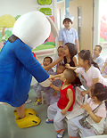39名來自投行部、固定收益部、公司管理部的員工志願者參與了2011年北京兒童醫院志願服務活動，為80多名心臟病患兒帶去圖書和玩具，並與他們做游戲、觀看樂隊表演。摩根士丹利亞太區聯席CEO兼中國區CEO、董事總經理孫瑋女士也投入到慰問北京兒童醫院患兒的活動中來，她表示“孩子們跟我們一起做游戲看表演，收到我們員工捐贈給他們的玩具和圖書，看到他們臉上洋溢著幸福的笑容我們很欣慰。這已經是摩根士丹利連續第三年來到北京兒童醫院與孩子們共度，我們會繼續致力於社區活動並回報社會”。北京兒童醫院的代表龐昌生也在此對摩根士丹利長期以來的支持表示感謝。
微笑行動(Operation Smile)
 6月，摩根士丹利員工志願者參觀了杭州微笑行動慈善醫院，向醫院患有唇裂和語言障礙的病患兒童捐獻了玩具，向15名來自貧苦家庭的病患兒童伸出援助之手。微笑行動是Operation Santa Claus聖誕老人行動的一部分，微笑行動預計將為300名杭州地區患有唇裂的兒童提供手術支持。
6月，摩根士丹利員工志願者參觀了杭州微笑行動慈善醫院，向醫院患有唇裂和語言障礙的病患兒童捐獻了玩具，向15名來自貧苦家庭的病患兒童伸出援助之手。微笑行動是Operation Santa Claus聖誕老人行動的一部分，微笑行動預計將為300名杭州地區患有唇裂的兒童提供手術支持。
上海慈善義賣
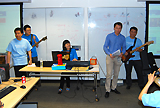摩根士丹利上海員工舉行了一場全公司的大型慈善義賣活動，義賣的物品全部來自於員工個人，其中甚至包括一場由員工參與及表演的小型慈善音樂會。最終義賣共籌得款項人民幣63,703元，所有善款捐往雲南農村希望小學和上海的致康園腦癱兒康復中心。
“根與芽”內蒙古千樹計劃
摩根士丹利上海員工今年加入了支持“根與芽”內蒙古千樹計劃的活動，在工作區設置募款箱募集千樹計劃善款。最終募集善款人民幣55,000元，可用來在內蒙古種植2,200棵樹木，一個在昆侖沙漠的“摩根士丹利”森林就此形成。“根與芽”是國際性的環保項目，旨在推動不同文化之間的互動，以及促進全社會對環境的關注和對他人的關愛。
2010年全球志願者月
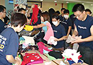中國去年共舉辦了超過20項志願服務活動，僅僅在我們的辦公室裡就有超過400名的員工志願者。在2010年6月“摩根士丹利全球志願者月”中，全球員工志願者團體參加社區服務的時間總計達131,247小時。這些活動包括為貧困縣的兒童捐贈衣物，在北京兒童醫院教授英語，在上海探訪腦癱兒童，孤兒院探訪，陪伴孤寡老人等活動。
 在籌款資助慈善項目方面，中國大陸和香港地區的員工在2010年4月共募捐到54萬人民幣（約7萬美金）用來幫助青海玉樹地震災區的受災者。所得款項為超過2500個受難家庭提供了應急物資，包括藥品，衣物，發電機，衛生用品等。我們還資助了中國社會工作協會以及兒童希望基金會對他們的全面心理輔導。
在籌款資助慈善項目方面，中國大陸和香港地區的員工在2010年4月共募捐到54萬人民幣（約7萬美金）用來幫助青海玉樹地震災區的受災者。所得款項為超過2500個受難家庭提供了應急物資，包括藥品，衣物，發電機，衛生用品等。我們還資助了中國社會工作協會以及兒童希望基金會對他們的全面心理輔導。
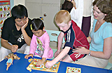另外，公司的員工也通過猜謎晚會，慈善拍賣和義賣會的形式將籌到的善款通過宋慶齡基金會幫助治療小兒白血病，通過心連心和兒童希望基金會資助十個以上挽救生命的心臟手術。慈善委員會也會向雲南的小學捐贈空調。
 同時，2010年成為香港迄今為止募捐最成功的一年，一共為Operation Santa Claus聖誕老人行動，Operation Smile微笑行動以及另外三家慈善機構（香港保護兒童會，生命小戰士會以及閱讀室）共籌集到220萬港幣（合29萬美金）。2010年香港龍舟隊代表了12個分區參加了一年一度的香港龍舟賽，並給香港保護兒童會籌集到超過25萬港幣（3萬2千多美金）。在世界杯期間，摩根士丹利也舉辦了第一場慈善足球賽。這次跨部門的足球慈善賽給“突破行動”（OB）一個給當地弱勢青少年提供體育項目的慈善機構共籌集到15萬港幣（1萬9千多美金）。2010年11月，投行業務部的員工參加了一年一度的香港樂施會100公裡競走，獲得了第七名，並給“樂施會”一個獨立發展的，致力於在發展中國家消除貧窮，以及災害救助的人道援助機構募捐到124,534元港幣（1萬6千美金）。
同時，2010年成為香港迄今為止募捐最成功的一年，一共為Operation Santa Claus聖誕老人行動，Operation Smile微笑行動以及另外三家慈善機構（香港保護兒童會，生命小戰士會以及閱讀室）共籌集到220萬港幣（合29萬美金）。2010年香港龍舟隊代表了12個分區參加了一年一度的香港龍舟賽，並給香港保護兒童會籌集到超過25萬港幣（3萬2千多美金）。在世界杯期間，摩根士丹利也舉辦了第一場慈善足球賽。這次跨部門的足球慈善賽給“突破行動”（OB）一個給當地弱勢青少年提供體育項目的慈善機構共籌集到15萬港幣（1萬9千多美金）。2010年11月，投行業務部的員工參加了一年一度的香港樂施會100公裡競走，獲得了第七名，並給“樂施會”一個獨立發展的，致力於在發展中國家消除貧窮，以及災害救助的人道援助機構募捐到124,534元港幣（1萬6千美金）。
2009年全球志願者月
每年6月是“摩根士丹利全球志願者月”，貫穿全月，摩根士丹利將以團體或個人的形式舉辦一系列志願者活動，鼓勵員工積極參與、貢獻自己的力量。這項摩根士丹利全球範圍內的活動，旨在加強員工參與、履行公司對員工志願活動的承諾。去年6月，公司的全球員工志願者團體參加社區服務的時間總計達41,000 小時。今年，摩根士丹利的目標是讓每一個員工都有機會在志願者月期間貢獻至少一個小時。我們相信，每人一小時，世界大不同！
北京兒童醫院聯歡活動
| 6月20日，摩根士丹利北京代表處的近20名員工來到北京兒童醫院血液腫瘤中心，為在這裏接受治療的小朋友們組織了一場快樂的聯歡活動。員工志願者們為孩子們帶來了玩具，和他們一起畫畫、做互動遊戲，而小朋友們也準備了精彩的節目，載歌載舞，為大家帶來了驚喜與快樂。 |  |
摩根士丹利參與“陽光微笑”全家一起獻愛心
| 6月20日，摩根士丹利上海代表處的近50名員工作為志願者，在置茂行中心公園參加了一場“陽光微笑”全家一起獻愛心活動。此次活動獲得了巨大的成功，為上海浦東新區特殊教育學校籌得善款共計65,000元。在活動中，摩根士丹利員工志願者們積極參加了售賣愛心獎券和飲用水、以及愛心義賣等活動，並帶領20名來自該校的聽力有障礙的孩子在現場的遊樂設施上盡情遊戲，並向他們贈送了文具，讓這些孩子們度過了充滿“陽光微笑”的一天。 |  |
為捐助衣物分類打包
 |
6月6日，近50名摩根士丹利上海辦公室的員工來到耀中國際學校浦東分校，參加了由Rivers of Hearts組織的慈善活動。摩根士丹利員工和其他志願者一起將由志願者捐獻的衣物進行整理、分類、打包和標記。經過一天的辛勤勞動，有近400箱各類衣物及文具被整理完畢併發往四川綿陽。10天后，其中大部分的衣物及文具將到達距綿陽15公里的一所中學的400名教師及學生手裏。 |
世紀公園清理活動
 |
7月4日，摩根士丹利上海近40名員工來到了浦東世紀公園，冒著近37度的酷暑，在園區內拾撿被隨意丟棄在路上及草坪中的垃圾。同時，摩根士丹利的員工還向公園內的遊客宣傳不隨地亂扔垃圾，提倡保護公園內環境。 |
摩根士丹利攜手北京兒童醫院，構築全球兒童健康聯盟
2009年1月13日，摩根士丹利宣佈北京兒童醫院加入摩根士丹利全球兒童健康聯盟。這一聯盟中還包括摩根士丹利紐約長老教會兒童醫院和倫敦大奧蒙德街兒童醫院。
“三十多年來，摩根士丹利一直致力於兒科醫療領域的捐助項目，期望能夠幫助使更多兒童擁有健康。” 摩根士丹利董事長兼首席執行官麥克先生表示，“此次與北京兒童醫院攜手，是我們首次在亞洲與世界級一流水準的醫院展開這樣規模的合作，它使摩根士丹利在全球兒童健康領域的聯盟進一步擴展，使我們得以為兒科醫療的發展和完善做出更多貢獻。”

作為摩根士丹利全球兒童健康聯盟的合作方，北京兒童醫院將利用摩根士丹利基金會的捐款支持籌建中的兒童血液腫瘤中心，並由此展開持續五年的合作。
“我們很榮幸能與中國最好的兒科醫院合作，為中國兒童謀求長久的福利。”摩根士丹利中國區首席執行官孫瑋說，“摩根士丹利希望通過捐贈設備、提供培訓機會以及通過促進中、美、英三國兒童醫院間的技術和學術交流，對在醫院就診的兒童和他們的家庭帶來更多的福音。”
1999年，摩根士丹利首次與紐約長老教會在兒童健康方面建立合作關係，投資建成了占地26.5萬平方英尺的摩根士丹利兒童醫院。2007年，摩根士丹利宣佈第二次合作計畫，即與倫敦大奧蒙德街兒童醫院合作，為其新門診大樓的建立募集資金，預計在2012年投入使用。
此外，摩根士丹利還是美國生長發育診所（Grow Clinics）的第一家大型企業合作夥伴，這些診所主要為貧困家庭提供醫療服務，幫助他們醫治家中患有營養不良併發症的兒童。
摩根士丹利對兒童健康領域的承諾在不斷延續，包括公司全球範圍內的員工，都在通過公司全球志願月活動（Global Volunteer Month）、年度呼籲（Annual Appeal）、激勵（Inspire）等多項慈善活動中貢獻自己的力量。
摩根士丹利香港辦事處聯合「董事合唱」活動共同為慈善活動募捐165萬港元
摩根士丹利香港辦事處2007年又一次參加了由南華早報和香港電臺於全市範圍內舉辦的“Operation Santa Claus”慈善活動，為當地慈善機構籌得165萬港元（折合211,538美元）的善款，募捐數目創下新的紀錄，與去年相比增加了逾50%。
善款主要通過兩種途徑籌得：
一、摩根士丹利駐香港董事參加著名的“摩根士丹利董事合唱”活動所獲得的贊助。合唱一年舉行一次，以於熱鬧的購物中心演唱聖誕頌歌為主要形式。
二、通過一個名為“假日挑戰”的線上遊戲籌款。遊戲以贏取摩根士丹利公司提供的獎品為主要目的。

12月14日的董事合唱由摩根士丹利前亞洲首席執行官韓碩澧（Hans Schuettler）主持。在國際金融中心商場內熱情的同事、家人、慈善合作夥伴、媒體和購物者面前，摩根士丹利駐香港的董事們演唱了Rudolph、the Red-nosed Reindeer和Jingle Bells等六首膾炙人口的聖誕歌曲。
摩根士丹利所籌得的165萬港元捐款將與“Operation Santa Claus”其他慈善活動所得之捐款一起為"Early Start Project”提供資金。 "Early Start Project”由摩根士丹利長期合作夥伴、“Operation Santa Claus”受益人之一的聖雅各福群會創辦，主要為社會底層貧困的孩子和他們的家人提供幫助。
摩根士丹利榮膺香港「最佳雇主」
Associates 顧問公司(www.hewittasia.com) 主辦的2003年「亞洲最佳雇主」競選最近公佈結果。摩根士丹利在香港評選中排名第三，僅次於一家本地公司和一家酒店集團公司，並為唯一入選前十名的金融服務機構。
主辦單位向各參與公司抽樣選出的員工發出問卷，內容覆蓋員工對公司各方面的滿意程度，包括工作與個人生活的平衡、工作地點是否安全、福利薪酬、公司治理和組織的整體領導實力等。而評選結果則主要取決於三方面：公司對人員潛力的開發、員工的滿意或不滿意程度和員工實現公司目標的參與程度。摩根士丹利首席行政官顏麗生女士對獲獎感到非常榮幸，並表示將持續檢討和改進公司內部的各項措施，確保公司繼續是員工的首選雇主和理想的工作地方。
摩根士丹利獲授「商界展關懷」標誌公司榮譽
會服務聯會(www.hkcss.org.hk) 主辦的第一屆「商界展關懷」獎勵計畫頒獎典禮於2002年12月舉行，摩根士丹利榮獲「商界展關懷」標誌公司。政務司司長曾蔭權代表香港特別行政區行政長官出席並主持了儀式。
「商界展關懷」評選活動旨在鼓勵工商界與社會服務界結成夥伴合作關係，共同建設一個彼此關懷和具凝聚力的社會。作為良好公司公民的模範，被評為「商界展關懷」標誌的工商機構均在以下最少兩方面承擔了義務：
- 鼓勵義務工作 - 鼓勵及支持員工參與義務工作；
- 關心員工家庭 - 為員工提供友善的工作環境，關心員工的家庭生活；
- 平等機會和多元化 - 樂於招聘弱勢社群，為他們提供就業機會；
- 建立合作夥伴- 與社會服務機構建立夥伴關係，共同策劃合作計畫；
- 傳授知識技術 - 向社會服務機構傳授專業的知識和技能；
- 樂於捐助社群 - 為社會服務提供金錢或物資捐助。
在公司的慈善夥伴、專門向年老長者提供援助的伸手助人協會 (www.helpinghand.org.hk) 的提名下，摩根士丹利因實現創新的「長者消閒列車」概念，為香港長者提供免費的流動康樂設施而獲選。